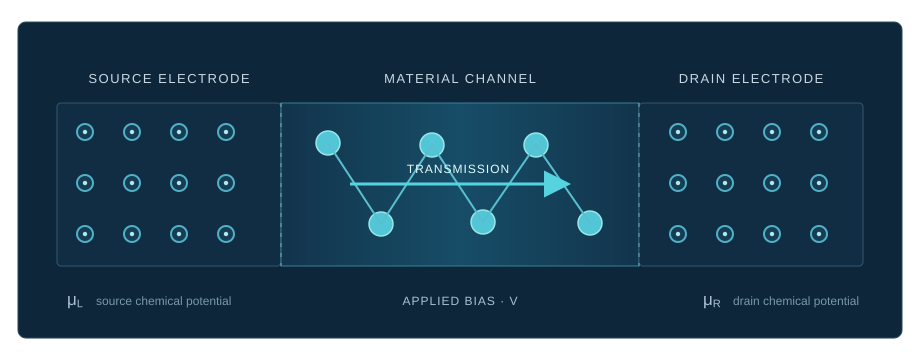

Computational materials science · Haifa, Israel
Materials that
move us forward.
Postdoctoral Researcher · Scientist · Founder
Connecting ideas.
Selected journal cover artwork
Questions at the atomic scale
Research with
real-world reach.
I use computational and experimental perspectives to understand materials for catalysis and clean energy.
Electronic transport · NEGF
From source
to drain.
Non-equilibrium Green’s function methods help describe how electrons transmit through a material under an applied bias. This is a conceptual device schematic, not a simulation result.
Explore related publications
CONCEPTUAL SCHEMATIC · NOT TO SCALESelected papers & citation record
Published work.
All publications
Code & reproducible research
Tools that
others can use.
Open-source tools, scripts and research repositories will be listed here as they are shared. Each entry is managed in one small data file.
Founder · FOSS Computations
Open tools.
Shared possibility.
The path so far
Learning by
building forward.
From engineering and energy technology to computational materials research at Technion.
Education
Experience
Skills
Let’s connect
Good work
starts with a conversation.
For research, collaboration, or FOSS Computations:
lakhanlall@campus.technion.ac.il